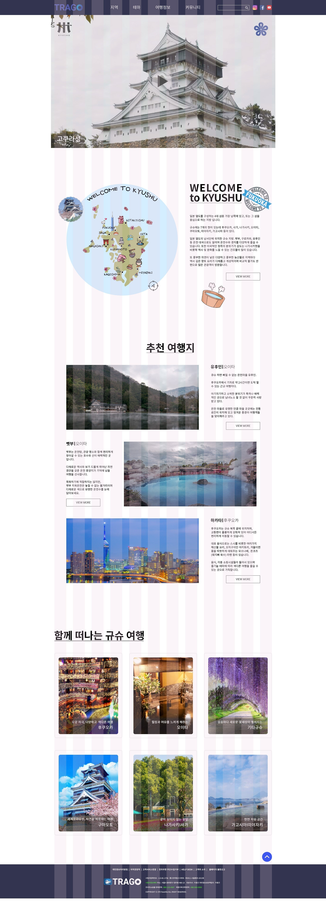

01
CONCEPT
풀페이지를 활용해 시각적인 정보를 강조하기 위해 레이아웃이 넓고
이미지를 크게하여 사용자가 여행 정보를 알기 쉽게 디자인을 하였습니다.
또한, 동영상을 첨부하여 생생한 정보를 알 수 있습니다.
02
TYPOGRAPHY
Noto serif KR
가나다라마바사아자차카타파하
ABCDEFGHIJKLMNOPQRSTUVWXYZ
0123456789
03
COLOR SYSTEM
R 255
G 255
B 255
#ffffff
R 50
G 52
B 79
#32344f
R 0
G 0
B 0
#000000
전반적으로 채도가 높지 않은 톤을 유지했습니다.
정보를 뚜렷하게 보여주기 위하여 여러가지 색상을 넣지않고 단조로운 색상으로 디자인 하였습니다.
04
PAGE DESIGN

Grid System : 1920px